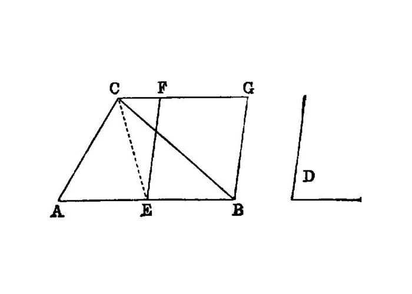

construct a parallelogram equal to a given triangle on a given angle
{kind=link}
To construct, in a given rectilineal angle, a parallelogram equal to a given triangle.
===
Let ABC be the given triangle, and D the given rectilineal angle; thus it is required to construct in the rectilineal angle D a parallelogram equal to the triangle ABC.
Let BC be bisected at E, and let AE be joined; on the straight line EC, and at the point E on it, let the angle CEF be constructed equal to the angle D; [I.23] through A let AG be drawn parallel to EC, and [I.31] through C let CG be drawn parallel to EF.
Then FECG is a parallelogram.
And, since BE is equal to EC,
the triangle ABE is also equal to the triangle AEC, for they are on equal bases BE, EC and in the same parallels BC, AG; [I.38] therefore the triangle ABC is double of the triangle AEC.
But the parallelogram FECG is also double of the triangle AEC, for it has the same base with it and is in the same parallels with it; [I.41]
therefore the parallelogram FECG is equal to the triangle ABC.
And it has the angle CEF equal to the given angle D.
Therefore the parallelogram FECG has been constructed equal to the given triangle ABC, in the angle CEF which is equal to D.
## References
[I.23]: /elem.1.23 “Book 1 - Proposition 23” [I.31]: /elem.1.31 “Book 1 - Proposition 31” [I.38]: /elem.1.38 “Book 1 - Proposition 38” [I.41]: /elem.1.41 “Book 1 - Proposition 41”